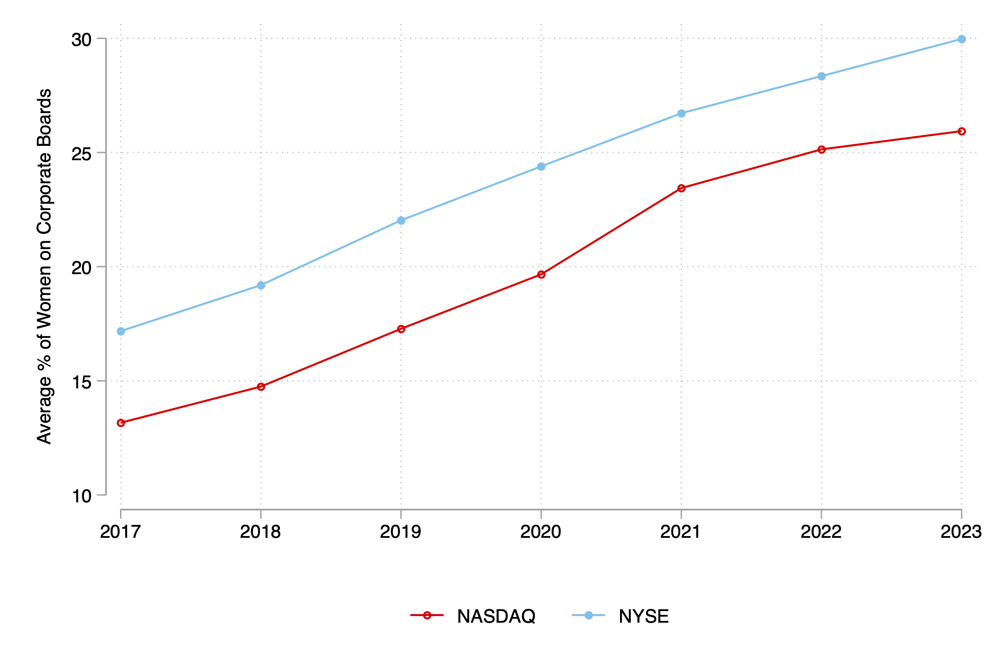

-
Human Capital, Search Frictions, and All-Male Corporate Boardrooms
-
Abstract
This study examines the role of search frictions and gendered differences in human capital in contributing to the persistence of all-male corporate boardrooms. I use California's SB826, enacted in 2018 and requiring at least one female director on the corporate boards of listed firms by 2019, as a policy shock. Using a difference-in-differences design comparing listed California-based firms to listed non-California based firms, I find the quota increased the female share of boards by 11 percentage points while increasing the share of out-of-network and first-time female directors by 3 percentage points. Other measures of human capital and board quality remained stable. The traditional shift-share instrumental variables approach used in related research dramatically over-states point-estimates, as pre-reform diversity is correlated with firm-size and growth trajectories. My results indicate SB826 reduced firms' reliance on existing networks, suggesting that search frictions, rather than a lack of qualified candidates, previously contributed to the persistence of all-male boards.
| PresentationsInterdisciplinary Seminar Series at Columbia University (2022), Discrimination and Diversity Workshop at University of East Anglia (2022), 17th Annual Economics Graduate Student Conference at Washington University in St. Louis (2022), Society of Labor Economists (2024), Canadian Economics Association (2024, 2025)
| Media | Illustrative Diagram
-
Do Non-Compete Agreements Help or Hurt Workers? Evidence from the NLSY97 (with Xiangru Li and Luke Rawling)
-
Abstract
While non-compete agreements (NCs) are common, the incentives driving their use across various segments of the labor market and effects on workers remain poorly understood. We show theoretically that for non-liquidity constrained workers, NCs compress the external wage profile and encourage firm-provided industry-specific human capital investments, which raises within-job wage growth. This model predicts NCs are used among workers with highly transferable skills. We also present a liquidity constraints model to understand NC usage among lower-wage workers. This model shows that NCs reduce costly turnover, but do not incentivize human capital investments. Lower-wage workers who sign NCs receive a compensating wage differential, but contracted wages will fall below marginal product, lowering the labor share of income. Using novel data on NC usage from the NLSY97, we find NCs are more commonly used among higher skilled workers who perform more sophisticated tasks and have higher returns on experience, consistent with NCs being used to resolve hold-up problems. Using a stacked difference-in-differences research design, we find that NCs raise job tenures by 6% and immediately increase wages by 10%. Six years after signing, the wage premium falls to 5%. NCs increase wage growth for higher-wage workers but reduce wage growth for lower-wage workers. We find no evidence of increased investment in formal training or upgrading of skills, suggesting investments prompted by NCs are likely informal. Our findings caution against blanket bans on NC usage.
| PresentationsQueen's University Faculty-PhD Working Group (2024), Organizations and Markets Workshop at Smith School of Business (2024), European Association of Labor Economists (2024), Southern Economics Association (2024), Administrative Sciences Association of Canada (2025), Canadian Public Economics Group (2025) by co-author, American Economics Association Non-Compete Agreements in Low-Wage Markets Session (2026): slides, Canadian Labour Economics Forum (2026), Society of Labor Economists (scheduled May 2026), University of British Columbia, Stone Inequality Seminar Series (scheduled 2027)
| MediaNon-Technical Summary, Video Interview, Toronto Star, Americans for Tax Reform, CBC
| Illustrative Diagram
-
Mandatory Disclosure and Female Representation in Corporate Leadership: Evidence from NASDAQ - Extended Abstract (with Dhruv Baswal, Tanvir Ahmed Khan, Bailey Kraus)
-
Abstract
We study how firms and financial markets respond to mandates requiring disclosure of information. The context is NASDAQ’s board diversity rule, a comply-or-explain regulation requiring listed firms to disclose board gender composition and either appoint at least one female director or explain non-compliance. Unlike gender quotas, this disclosure-based mandate operates through market pressures rather than financial penalties, allowing reputational concerns to shape firm behavior. Using NYSE-listed firms as a control group, we find that mandatory disclosure increases female board representation by 5%, with effects concentrated among larger firms and those with higher pre-regulation Environmental, Social, and Governance ratings. Event-study evidence shows abnormal returns of approximately 0.5% for NASDAQ firms around regulatory approval and -0.5% around judicial repeal, with larger effects for firms with all-male boards. Firms that choose to explain most often cite supply-side constraints such as an inability to find qualified candidates. Our findings indicate that mandatory disclosure generates positive valuation effects but only modestly increases gender diversity in corporate leadership.
| PresentationsQueen's University Economics Brown Bag (2025), Queen's University Finance Brown Bag (2025), Southern Economics Association (2025), Administrative Sciences Association of Canada (2025)
| Illustrative Diagram
-
Non-Compete Agreements and Bargaining Power, AEA Papers and Proceedings, Volume 116, May 2026. (Joint with Xiangru Li and Luke Rawling)
-
The Effects of Non-Compete Regulation